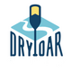

Overview
Purpose
Our purpose is to serve as the go-to resource for all things related to rafting. Our goal is to provide comprehensive, accurate, and up-to-date information about rafting equipment, techniques, safety measures, and popular rafting locations. We aim to foster a community of rafting enthusiasts where users can share their experiences, learn from each other, and plan their next adventure. We are committed to ensuring our website is user-friendly and accessible on all devices. Ultimately, we hope that our website will inspire more people to explore the exciting world of rafting and promote safe and responsible practices in the sport.
Audience
We envision our audience as a dynamic mix of adventure enthusiasts and nature lovers. They are individuals from all walks of life, united by a shared passion for the thrill and serenity that rafting brings. Our users range from seasoned rafters seeking to connect with a like-minded community, to beginners eager to embark on their first rafting adventure. Our audience seeks more than just information; they crave authentic experiences, practical advice, and a platform where they can share their own stories. We understand that there is a need for a dedicated space that caters specifically to the rafting community - a place where users can plan their next adventure, exchange tips, and celebrate their shared love for this exhilarating sport. In terms of accessibility, we recognize that our users lead active lifestyles and are often on the move. Therefore, we anticipate that many will access our site via mobile devices. We are committed to ensuring that our website is fully responsive and offers a seamless user experience, whether you’re planning your next trip from the comfort of your home or checking the latest rafting tips from a riverside campsite. At Dry Oar Rafting, we’re not just about providing information; we’re about building a community. We believe that every rafter has a story to tell, and we’re here to listen. So come aboard, share your journey, and let’s navigate these waters together!.
Branding
Website Logo
Style Guide
Color Palette
Palette URL: https://coolors.co/004643-63ccca-bdfaf1-e7fffb
| Primary | Secondary | Accent 1 | Accent 2 |
|---|---|---|---|
| [#004643] | [#63CCCA] | [#BDFAF1] | [#E7FFFB] |
Typography
Heading Font: Caveat
Paragraph Font: Roboto
Normal paragraph example
The best Whitewater Rafting in Colorado, White Water Rafting Company offers rafting on the Colorado and Roaring Fork Rivers in Glenwood Springs. Since 1974, we have been family owned and operated, rafting the Shoshone section of Glenwood Canyon and beyond.
Colored paragraph example
Trips vary from mild and great for families, to trips exclusively for physically fit and experienced rafters. No matter what type of river adventures you are seeking, White Water Rafting Company can make it happen for you.
Navigation
Site Map
Wireframes
Home